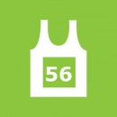

Ultra Marathon - 56km
the world's most beautiful marathon - 56km Ultra Marathon around the Cape Peninsula, since 1970
-
The 45th consecutive Old Mutual Two Oceans Marathon will remain on the traditional route via Chapman's Peak, Hout Bay and Constantia Nek (unless deemed unsafe by authorities in which case the Ou Kaapse Weg route (prior to 2004) will be used). The Old Mutual Two Oceans Marathon is run under the rules of IAAF, Athletics South Africa (ASA) and Western Province Athletics (WPA).
Distance
56 km (34.8 miles)
Date of Race
Easter Saturday, 19 April 2014
Start Time
06:30